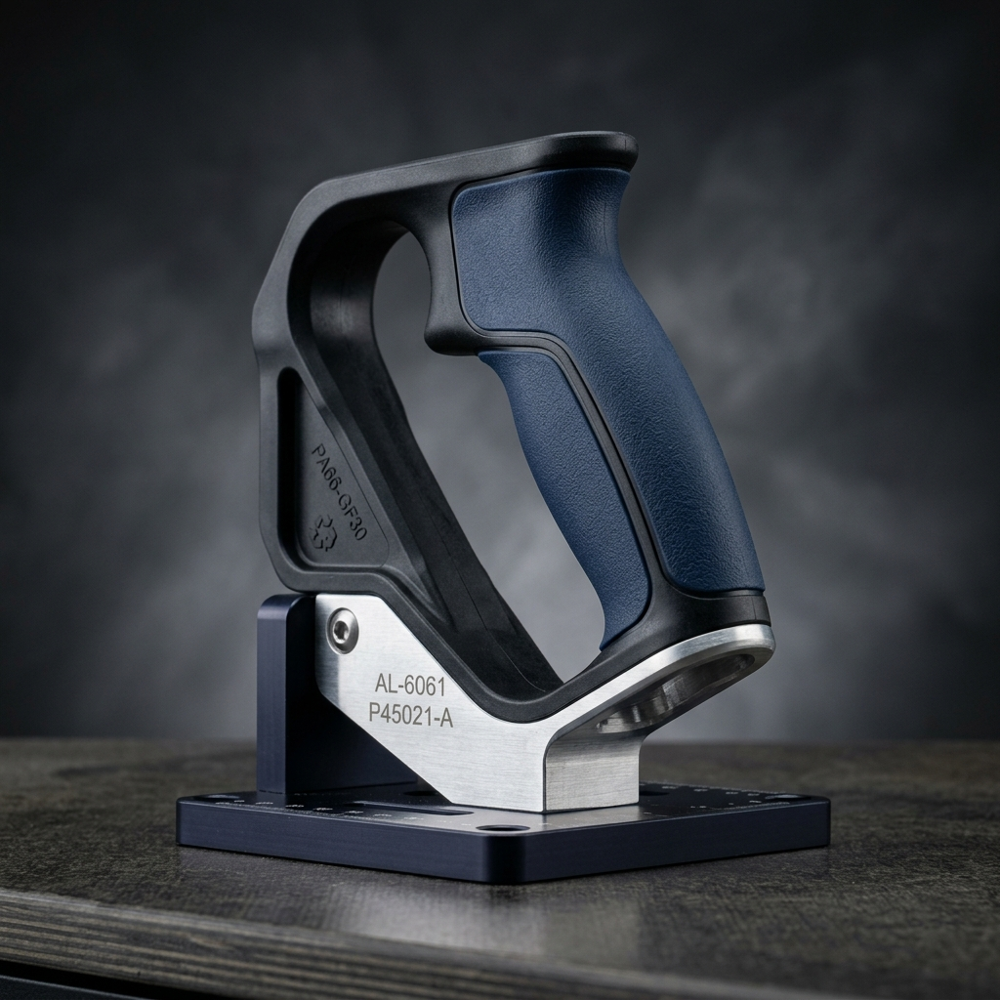

分類：自己潤滑性シリコーン・シール | 公開日：2026-08-12
自己潤滑性シリコーンは内部の矽油が表面へ析出し、外部潤滑剤不要の特殊弾性体です。鈞翔実業は自動車用ワイヤーシール、医療用プランジャーガスケット、工業用Oリングの圧縮成形受託製造を提供。
技術コラム
シリコーンゴム硬度の完全選定ガイド：Shore A 10°から80°まで、用途別の最適硬度とは？
分類：材料知識・設計ガイド | 公開日：2026-07-08
シリコーンゴムの硬度（ショア硬度 Shore A で表示）は、カスタムシリコーン製品設計において最も重要なパラメータの一つです。超軟質の Shore A 10° の哺乳瓶ニップルから、硬質の Shore A 80° の工業用ガスケットまで、硬度によって触感・反発速度・耐荷重・シール性能は根本的に異なります。本記事では用途別に最適硬度を体系的に解説し、金型製作後に規格ミスが発覚して再試作が必要になるコストを防ぐためのガイドをお届けします。
一、Shore A硬度とは？—測定方法と物理的意味
ショア硬度（Shore Hardness）はゴム・プラスチック材料の硬さを測定する国際標準指標で、ASTM D2240 規格に準拠します。Shore A スケールは一般的なエラストマー（軟質〜中硬質）の測定に用いられ、0°（完全に力が吸収される）から 100°（貫入不可）のスケールで表示されます。測定はデュロメーター（硬度計）と呼ばれる標準化された器具で実施し、一定の圧力で試験片に針を押し込んだときの貫入深さから硬度値を読み取ります。
重要な点として、Shore A 硬度はあくまで材料の表面押し込み抵抗の指標であり、引張強度や引き裂き強度とは直接対応しません。設計段階でこの点を誤解すると、部品の実際のパフォーマンスと設計意図がずれる可能性があります。
二、硬度区分対照表と代表用途
硬度区分
Shore A 範囲
代表用途
超軟質
10° 〜 20°
哺乳瓶ニップル、皮膚貼付医療パッド、超軟質スキンケア用モールド
軟質
30° 〜 45°
食品用シリコーン型、ベビー用おしゃぶり、耳栓、軽荷重防振脚
中軟質
50° 〜 60°
医療機器シール、ゴムキーパッド、一般工業用ガスケット、パソコン防振パッド
中硬質
65° 〜 75°
自動車エンジンシール、精密機器用防振マウント、高圧ホースシール
硬質
80° 以上
重荷重工業用ガスケット、耐摩耗ローラー、高圧システムのバルブシート
三、硬度選定に影響するキーファクター
シール圧力： シール用途では、低いシール圧力環境（例：食品容器のフタパッキン）には Shore A 40°〜50° の軟質材が適切です。高圧流体系（液圧シリンダーなど）では Shore A 60°〜70° 以上が必要となり、過度に軟らかい材料は高圧下で変形してシール性を失います。動的用途 vs 静的用途： 動的シール（繰り返し圧縮・摺動が発生する部位）は圧縮永久歪み（Compression Set）が小さい配合を選ぶことが重要です。同一硬度でも配合によってこの特性は大きく異なります。静的シールは比較的許容範囲が広くなります。相手部品とのクリアランス： 相手部品の表面粗さや嵌合クリアランスも硬度選定に影響します。表面が粗い相手材や大きなクリアランスには、より軟質な材料を使用してシール面への追従性を確保します。使用温度： シリコーンゴムは -60°C〜+200°C の広い温度域で使用可能ですが、極低温下では一般に硬度が増加し、高温下では軟化する傾向があります。設計時には実際の使用温度での動作を想定した硬度設定が必要です。触感・圧縮荷重： 消費者向け製品（スマートフォンケース、ウェアラブルバンドなど）では、触感や押し込み感が製品品質の重要な要素となります。Shore A 30°〜50° の範囲が快適な握り感を与えることが多いですが、最終的にはサンプル評価を推奨します。
四、鈞翔実業が対応可能な硬度範囲とカスタマイズ
鈞翔実業有限公司では、Shore A 10°〜90° の広い硬度範囲に対応しており、自社内の配合技術により特定の硬度値への微調整が可能です。また、同一製品で異なる硬度の部位を一体成形する「デュアルハードネス成形」にも対応しており、例えばキーパッド製品でキートップを Shore A 45°、ベースを Shore A 65° に設定するなど、複雑な要件にも柔軟に対応します。
さらに、試作サンプル製作時には硬度違いの複数バリアントを同時に提供することができ、設計者が実物を触って比較したうえで最適硬度を確定することが可能です。これにより、「金型製作後に硬度ミスが発覚」という最も避けたいリスクを事前に排除できます。
シリコーンゴム製品の硬度選定や配合に関するご質問は、設計図面（STEP/IGS/PDF形式）をお送りいただき、弊社技術スタッフへお気軽にご相談ください。初期技術相談は無料で対応いたします。
高品質なシリコン・ゴムのカスタム成形をお探しですか？
鈞翔実業（Jun-Hsiang）は30年以上の受託製造（OEM/ODM）実績を持ち、固形シリコーン熱プレス成形、LSR液状シリコーン射出成形、および異材質結合（インサート成形）技術を提供しています。ISO 9001認証取得済み。
技術コラム
食品グレードシリコーン認証の完全ガイド：FDA・LFGB・SGSの違いとは？
分類：材料知識・食品グレード | 公開日：2026-07-08
食品グレードシリコーンは製菓型・哺乳瓶ニップル・ウォーターボトルパッキング・キッチン用品に幅広く使われています。しかし「食品グレード」という言葉は市場で乱用されており、そう謳っている製品のすべてが厳格な国際認証を取得しているわけではありません。本記事では FDA（米国）・LFGB（EU/ドイツ）・EC 1935/2004・SGS第三者試験の違いを詳しく解説し、食品接触シリコーン部品の調達・開発時に本当に法規に適合した材料・受託先を選ぶためのガイドをお届けします。
一、FDA 21 CFR 177.2600 — 米国食品医薬品局の基準
FDA（米国食品医薬品局）の 21 CFR 177.2600 は、食品に繰り返し接触するゴム製品に使用可能な成分を定めた規制です。この規格では許可された成分リスト（Positive List）が定義されており、シリコーンポリマー本体、充填剤、加硫剤などの添加剤がリストに収録されていなければなりません。注意すべき点は、FDA 認証はメーカーによる「自己適合宣言（Self Declaration）」で成立するケースが多く、第三者機関による試験が必須ではないという点です。つまり「FDA 対応」と表記されていても、実際には詳細な試験を行っていないケースがあります。
二、LFGB §30/31 — EU/ドイツの食品接触材料規制
LFGB（ドイツ食品・飼料法）の第 30 条・第 31 条は、食品に接触する材料について厳格な試験要件を定めています。特にシリコーン製品には BfR（ドイツ連邦リスク評価研究所）勧告に基づく試験が求められ、溶出試験（Simulant Migration Test）として食品模擬液（蒸留水・酢酸溶液・エタノール溶液・植物油など）を用いた溶出量が基準値以下であることを実証する必要があります。LFGB 認証はヨーロッパ市場（特にドイツ・オランダ・スカンジナビア）向け製品では事実上の必須要件となっています。
三、EC 1935/2004 — EU食品接触材料基本規則
EC 1935/2004 はEU全域における食品接触材料の基本規制です。同規則は食品接触材料が食品に移行する物質によって人体健康を害してはならず、食品の成分・風味・臭いを変えてはならないと規定しています。シリコーン製品については特定規制（Specific Measure）がまだ完全に整備されていないため、各EU加盟国の個別規制（ドイツのLFGBなど）が実質的な基準として機能しています。
四、SGS第三者試験 — 独立した品質検証
SGS（Société Générale de Surveillance）は世界最大級の独立検査・認証機関です。食品グレードシリコーン部品の SGS 試験では、一般的に以下の項目が検証されます：重金属（鉛・カドミウム・クロム・水銀等）の溶出量、揮発性シロキサン（D4/D5/D6 環状シロキサン）の含有量、各食品模擬液への溶出量。SGS レポートは数値データとして提供されるため、顧客・バイヤーに対して透明性の高い品質証明として機能します。
五、本物の食品グレードシリコーンを見分ける方法
証明書の要求： 「食品グレード」を主張するメーカーには、具体的な試験レポート（SGSや同等機関発行）の提示を求めてください。証明書番号・発行日・試験項目・合否結果が明記されていることを確認します。白色フィラー（シリカ）の使用： 本物の食品グレードシリコーンは通常、食品安全な補強剤（高純度沈降シリカ）のみを使用し、炭酸カルシウムや他の非食品グレードフィラーは含みません。焼成試験（白煙テスト）： 業界では非正式な確認方法として、製品を炎で焼いたときに黒煙が出る場合は非シリコーン系素材（例：PVC）の混入が疑われます。ただしこれは参考程度の確認であり、正式な試験の代替にはなりません。臭気： 食品グレードシリコーンは成形直後は若干の臭気が残る場合がありますが、一定時間の二次加硫（Post-Curing）後には無臭となるべきです。強い臭気が続く場合は添加剤の品質に問題がある可能性があります。
六、鈞翔実業の食品グレード対応能力
鈞翔実業有限公司は、FDA 21 CFR 177.2600 および LFGB §30/31 に適合した食品グレードシリコーン原料を使用した受託製造に対応しています。製菓用シリコーン型、哺乳瓶ニップル、食品保存容器パッキン、ウォーターボトルシールなど、食品に直接接触するシリコーン部品の開発・量産を承ります。試作段階から SGS 試験対応まで一貫してサポートいたします。食品グレードシリコーン部品の開発・調達をご検討の際は、設計データと使用環境の詳細をお送りいただき、弊社技術チームにご相談ください。
高品質なシリコン・ゴムのカスタム成形をお探しですか？
鈞翔実業（Jun-Hsiang）は30年以上の受託製造（OEM/ODM）実績を持ち、固形シリコーン熱プレス成形、LSR液状シリコーン射出成形、および異材質結合（インサート成形）技術を提供しています。ISO 9001認証取得済み。
技術コラム
シリコーン O リング・シール部品カスタム金型製作ガイド：図面から量産まで完全解説
分類：設計ガイド・防水シール | 公開日：2026-07-08
シリコーン O リングは空圧・液圧システム、半導体装置、水中機器、家電製品など、産業用シールシステムで最も普及した部品の一つです。AS568・JIS B2401 などの標準規格品が市販されていますが、特殊寸法・特殊材質・高精度公差が必要な場合はカスタム金型製作が唯一の解決策となります。本記事では図面提供から量産出荷までの全プロセスを完全に解説します。
一、カスタム金型が必要な場合とそうでない場合
標準規格（AS568 北米系、JIS B2401 日本系、ISO 3601 国際系）に収録されているサイズであれば、既製金型を使用した在庫品の調達が最も経済的です。しかしながら、以下のような場合はカスタム金型製作が必要となります：
非標準内径・外径・断面径（例：内径 11.7mm × 断面径 2.2mm などの中間サイズ）
標準規格より高精度な寸法公差が要求される精密機器用途
特殊断面形状（X リング、D リング、角断面リングなど）
特定の材料配合・硬度・色が要求される用途（医療・食品・半導体向けなど）
大量生産でコスト削減が目的の専用金型
二、5ステップ製造フロー
STEP 1 — 図面評価・DFM（製造性評価）： 顧客から提供された図面（STEP/IGS/PDF）を受け取り、金型製作の実現可能性・推奨配合・公差達成の可否・単価見積を確認します。通常3〜5営業日で回答します。
STEP 2 — 金型設計： CAD/CAM ソフトウェアを使用してキャビティ形状・ランナー系・エジェクター機構を設計します。O リング用金型は多数個取り（12〜96 キャビティ）が一般的で、コスト効率と生産効率を両立します。
STEP 3 — 試作品製作（T1 サンプル）： 金型完成後、初回ショットのサンプルを製作し、寸法測定（CMM 三次元測定）・外観検査を実施のうえ、測定レポートとともに顧客へ送付します。
STEP 4 — 承認・金型修正： 顧客によるサンプル評価後、必要に応じて金型修正（スチール除去・補肉）を行います。公差内に収めるための微調整は通常 1〜2 回で完了します。
STEP 5 — 量産・出荷： サンプル承認後、量産ロットに移行します。各ロットには出荷検査レポート（寸法・外観・材質証明）を添付します。
三、各工程の期間・費用目安
工程
期間目安
備考
図面評価・見積
3〜5営業日
無料
金型製作
15〜25営業日
複雑度により変動
T1サンプル評価
5〜10営業日
測定レポート付き
量産リードタイム
10〜20営業日
数量により変動
四、材料比較：シリコーン vs 他のエラストマー
材料
使用温度
耐油性
主な用途
シリコーン（VMQ）
-60°C〜200°C
中
食品・医療・電子機器
EPDM
-50°C〜150°C
低
水・スチーム・屋外用途
NBR（ニトリル）
-40°C〜120°C
高
油圧・燃料系
FKM（フッ素ゴム）
-15°C〜220°C
最高
化学薬品・自動車・半導体
五、鈞翔実業のカスタムOリング対応能力
鈞翔実業有限公司では、シリコーン・EPDM・FKM などの各種エラストマーを使用したカスタム O リング・シール部品の金型製作から量産まで一貫して対応しています。最小ロット 500 個から受注可能で、高精度 CMM 測定と出荷検査レポートを標準提供します。O リング・シール部品の開発・調達をご検討の際は、設計図面をお送りいただきご相談ください。
高品質なシリコン・ゴムのカスタム成形をお探しですか？
鈞翔実業（Jun-Hsiang）は30年以上の受託製造（OEM/ODM）実績を持ち、固形シリコーン熱プレス成形、LSR液状シリコーン射出成形、および異材質結合（インサート成形）技術を提供しています。ISO 9001認証取得済み。
技術コラム
産業用機械シリコーン防振脚の選定ガイド：硬度・耐荷重・主要設計パラメータ
分類：設計ガイド・材料知識 | 公開日：2026-07-08
機械振動は加工精度に影響するだけでなく、ボルト緩み・フレーム疲労・安全事故を引き起こすリスクもあります。適切なシリコーン/ゴム製防振脚（アンチバイブレーションマウント）の選定は、精密機械メーカーが見逃せない重要課題です。本記事では耐荷重計算・硬度選定・材料比較・取付形状まで体系的に解説します。
一、振動と減衰の基礎—なぜシリコーンは金属スプリングより優れるか
機械システムにおける振動は、駆動系の回転不均衡・往復運動・外部衝撃などによって発生します。金属スプリングは弾性エネルギーを蓄積・放出しますが、それ自体に内部減衰（Internal Damping）機構がないため、共振周波数付近では振動を増幅させるリスクがあります。一方、シリコーンゴムは粘弾性（Viscoelastic）特性を持ち、圧縮変形時に機械的エネルギーを熱エネルギーに変換して吸収します。これにより共振増幅を防ぎ、広い周波数域で安定した減衰性能を発揮します。また、シリコーンゴムは -60°C〜200°C の広い温度域で安定した弾性を維持し、屋外・高温環境でも性能劣化が少ないのも大きな優位点です。
二、耐荷重の計算方法
防振脚を選定する際の最初のステップは、各脚にかかる荷重を計算することです。基本計算式は以下のとおりです：
1脚あたりの荷重（N）= 機械総重量（kg）× 重力加速度（9.8 m/s²）÷ 防振脚の個数
ただし実際の設計では、機械の重心位置・振動加速度（G値）・安全率（通常 2〜4 倍）を考慮する必要があります。動的荷重（振動による付加荷重）は静的荷重の数倍に達することがあるため、防振脚の定格荷重は静的荷重の 2〜3 倍以上を選択することが推奨されます。
三、硬度選定ガイドライン
軽量精密機器（〜50kg）： Shore A 30°〜45° の軟質シリコーン。小さな振動入力でも効果的に減衰し、精密計測装置・光学機器の防振に最適です。中型産業機械（50〜500kg）： Shore A 50°〜65° の中硬質シリコーン。剛性と減衰性のバランスが良く、CNC 工作機械・コンプレッサー・ポンプ等に適します。重機・大型設備（500kg以上）： Shore A 65°〜80° の硬質シリコーンまたはゴム。高荷重下での過度な変形を防ぎ、設備の安定性を確保します。
四、材料比較表
材料
使用温度
耐候性
特徴
シリコーン
-60°C〜200°C
優秀
広温度域・食品/医療対応・UV耐性
EPDM
-50°C〜150°C
優秀
コスト低・耐水性良・電気絶縁
天然ゴム（NR）
-50°C〜80°C
低
高減衰率・高引張強度・コスト低
NBR
-40°C〜120°C
中
耐油性・油機械周辺に適合
五、取付形状の種類
丸型フラット脚： 最もシンプルな形状。機械底面への設置が容易で、コストが低い。軽〜中荷重に適します。角型（方形）脚： スライドしにくく設置面への接触面積が大きい。大型パネル・キャビネット底部に多用されます。内ネジ（雌ネジ）型： ゴム脚に金属インサートの雌ネジを埋め込み、機械フレームへのボルト固定が可能。固定強度が高く振動環境に適します。外ネジ（雄ネジ）型： ゴム脚から金属ボルトが突き出た形状。高さ調整ナットと組み合わせてレベリング機能を実現します。
六、鈞翔実業のカスタム防振脚対応
鈞翔実業有限公司では、各種工業機械向けのカスタム防振脚・防振マウントの受託製造に対応しています。ゴムと金属インサートの一体成形（Rubber-to-Metal Bonding）技術により、金属プレート・ボルト・ナットをシリコーン/EPDM/天然ゴムと一体化した複合防振部品を製作できます。荷重仕様・取付寸法・材料仕様を提供いただければ、最適な設計提案と試作サンプルを迅速にご提供します。
高品質なシリコン・ゴムのカスタム成形をお探しですか？
鈞翔実業（Jun-Hsiang）は30年以上の受託製造（OEM/ODM）実績を持ち、固形シリコーン熱プレス成形、LSR液状シリコーン射出成形、および異材質結合（インサート成形）技術を提供しています。ISO 9001認証取得済み。
技術コラム
半導体・FPD製造プロセス向けシリコーンシール部品：クリーンルーム対応・低アウトガス・耐プラズマ要件の完全解説
分類：材料知識・防水シール | 公開日：2026-07-08
半導体ウェハファブ（Fab）と TFT-LCD/OLED パネル工場は、シリコーンシール部品にとって最も過酷な応用環境の一つです。これらの施設では、高真空・高温・腐食性ガス（HF、Cl₂、O₃）環境下で部品が微量の揮発性成分を一切放出してはならず、ウェハやパネルの歩留まり汚染を防ぐ必要があります。本記事では各プロセス工程ごとの具体的なシール部品要件と、これらを満たすための材料選定・製造管理のポイントを解説します。
一、半導体プロセス工程別シール部品要件
ドライエッチング（RIE/ICP）： プラズマ（CF₄、Cl₂、HBr など）によるエッチングプロセスでは、チャンバーシールに高耐プラズマ性が要求されます。標準シリコーン（VMQ）はプラズマにより侵食されやすく、パーティクル（微粒子）の発生が歩留まり汚染を引き起こします。このプロセスでは FFKM（パーフルオロエラストマー）または高純度フルオロシリコーン（FVMQ）が推奨されます。
CVD（化学気相成長）・ALD： 高温成膜プロセスでは 150°C〜300°C の温度環境下でのシール性が求められます。シール材の熱安定性と低アウトガス性が重要で、成膜ガス（SiH₄、NH₃、TiCl₄ など）との反応性が低い材料が必要です。
CMP（化学機械研磨）： スラリー（研磨液）との接触があるため、耐化学薬品性（特に酸性・アルカリ性スラリー）と耐摩耗性が求められます。
ウェット洗浄（SC-1/SC-2/DHF）： APM（アンモニア過酸化水素混合液）、SPM（硫酸過酸化水素混合液）、DHF（希フッ酸）などの強腐食性薬液への耐性が必要です。EPDM は耐酸化性洗浄液に優れますが、DHF 環境では FKM または FFKM が必要となります。
二、低アウトガスとクリーン度の重要性
半導体製造における「アウトガス（Outgassing）」とは、シール材料が真空・高温下で揮発性物質（低分子量シロキサン D4/D5/D6、可塑剤、硫化物など）を放出する現象です。これらの揮発成分がウェハ表面に付着すると、トランジスタ特性の劣化・配線腐食・歩留まり低下を引き起こします。
低アウトガスシリコーンを実現するための製造管理ポイント：
二次加硫（Post-Curing）： 200°C × 4〜8時間の二次加硫により、残留する低分子量シロキサンと未反応成分を除去します。これはアウトガス低減に最も効果的な工程です。高純度原料の使用： 半導体グレードシリコーンは医療グレードよりもさらに厳格な原料純度が要求されます。充填剤・架橋剤・触媒の純度と種類を慎重に管理する必要があります。クリーンルーム成形・包装： ISO Class 7（Class 10,000）以上のクリーンルームでの成形・検査・包装が理想的です。
三、材料選定ガイド：標準シリコーン vs 高純度VMQ vs FFKM
材料
耐プラズマ性
耐腐食薬液
推奨用途
標準シリコーン（VMQ）
低
中
非腐食プロセス・ロボット搬送系
高純度シリコーン（低アウトガス）
中
中
CVD炉シール・搬送チャンバー
FVMQ（フルオロシリコーン）
中〜高
高
燃料系・溶剤系・低温チャンバー
FFKM（パーフルオロ）
最高
最高
エッチングチャンバー・DHF洗浄系
四、FPD（フラットパネルディスプレイ）応用
TFT-LCD・OLED パネル製造ラインにおけるシリコーン部品の代表的な用途：
真空チャックパッド： ガラス基板を吸着・固定するための低硬度（Shore A 20°〜40°）シリコーンパッド。表面平滑度と低アウトガス性が要求されます。ガラス搬送ロボット用パッド： 搬送ロボットのエンドエフェクタに取り付けるシリコーンパッド。ガラス表面を傷つけない軟質材料と、静電気発生を抑える導電性配合が求められます。ドライルームシール： 超低湿度環境（露点 -60°C 以下）での気密シール。水分透過性の低い材料が必要です。
五、鈞翔実業の半導体・FPD関連対応能力
鈞翔実業有限公司は、半導体・FPD 製造装置向けシリコーンシール部品の受託製造に対応しています。二次加硫（Post-Curing）処理による低アウトガス対応、クリーンルームでの検査・梱包、CMM 三次元測定による精密寸法管理を提供します。半導体装置・FPD 設備向けのシリコーンシール部品開発をご検討の際は、プロセス環境の詳細（使用ガス・温度・真空度・薬液種類）とともにご相談ください。
高品質なシリコン・ゴムのカスタム成形をお探しですか？
鈞翔実業（Jun-Hsiang）は30年以上の受託製造（OEM/ODM）実績を持ち、固形シリコーン熱プレス成形、LSR液状シリコーン射出成形、および異材質結合（インサート成形）技術を提供しています。ISO 9001認証取得済み。
技術コラム
極端な耐油・化学溶剤環境における特殊ゴムの選定：フッ素ゴム（Viton）とフルオロシリコーン（FVMQ）の特性と応用比較
分類：先端技術シリコーン応用 | 公開日：2026-07-02
石油化学、半導体製造装置、航空宇宙、および自動車の燃料システムにおいて、シール材やゴム配管は高温度の燃料、強酸・強アルカリ、有機溶剤、または極端な温度変化という極めて過酷な環境に晒されます。このような環境下では、一般的なシリコーンや通常のゴムは膨潤、硬化、または亀裂が発生しやすくなります。設備の長期稼働安定性と安全性を確保するため、フッ素ゴム（Viton/FKM）とフルオロシリコーン（FVMQ）は最も重要な2つの特殊エラストマーです。本稿では、これら2つの材料の耐薬品性、耐熱性能、および機械的強度の違いを詳細に解説し、設計エンジニア向けの選定ガイドラインを提示します。
精密防護とシール用途において、素材の「化学的不活性」と「耐熱温度」はゴム部品の寿命を決定付ける核心要素です。一般用ニトリルゴム（NBR）や汎用シリコーンが強溶剤や燃料と接触し、膨潤（Swelling）によってシール性を喪失する現場では、特殊フッ素エラストマーが唯一の現実的解決策となります。フッ素ゴム（Viton/FKM）とフルオロシリコーン（FVMQ）は共にフッ素原子を含有しますが、主鎖構造の違いにより、物性や適応する使用環境においてそれぞれ顕著な差異を有します。以下にこれら特殊材料の特性を詳細に比較します。
一、 フッ素ゴム（Viton / FKM）：高温・強腐食環境における信頼のベンチマーク
フッ素ゴム（デュポン社のブランド名であるViton、およびFKMとして広く知られる）は、フッ素含有モノマーから共重合された飽和炭素鎖エラストマーです。
耐薬品・耐油性： FKMは極めて高い化学的安定性を持ち、ほとんどの炭化水素、ジエステル系潤滑油、強酸、高濃度燃料、および有機溶剤に対して優れた耐性を示します。耐薬品・耐溶剤性能において、ゴム材料の中でトップクラスの実績があります。耐熱性： 長期使用温度範囲は -15°C から 220°C（短期最高 250°C）であり、高温下でも高い機械的強度と優れた圧縮永久歪み特性を維持します。デメリット： 低温環境での弾性が劣ります。-15°Cを下回ると徐々に弾性を失って硬化し（脆化温度は -20°C〜-30°C）、極寒地や高空飛行の航空宇宙用途には適しません。また、ケトン類（アセトンなど）や低分子量エステル類に対する耐性は比較的低いです。
二、 フルオロシリコーンゴム（FVMQ）：耐燃料性と広範な使用温度を両立する全天候型エラストマー
フルオロシリコーン（FVMQ）は、シリコーン主鎖にフッ素化アルキル基（Fluorine Groups）を導入して改質された共重合体であり、シリコーンとフッ素ゴムの長所を併せ持っています。
耐薬品・耐油性： 側鎖のフッ素基により、非極性溶剤、ジェット燃料、潤滑油、メタノール系燃料、および作動油等に対してFKMと同等の優れた耐性を示し、非常に低い膨潤率を維持します。優れた耐熱・耐寒温度範囲（-60°C〜200°C）： これがFVMQの最大のメリットです。-55°Cから-60°Cの極低温域でも優れた柔軟性とシールド性を維持し、同時に200°Cの連続高温にも耐えることができます。デメリット： 原材料費が非常に高価で、フッ素ゴム（Viton）に比べて引張強度や引き裂き強度などの機械的強度が劣るため、主に静的シールや低動的用途の精密ガスケットに使用されます。
三、 特性比較表：フッ素ゴム (Viton / FKM) vs. フルオロシリコーン (FVMQ)
評価指標
フッ素ゴム (Viton / FKM)
フルオロシリコーン (FVMQ)
使用温度範囲
-15°C ~ 220°C (短期 250°C)
-60°C ~ 200°C (低温弾性に優れる)
耐燃料・航空揮発油性
優秀 (膨潤率極低)
優秀 (膨潤率極低)
耐強酸・強アルカリ性
優秀
中〜良
引張・引裂強度
高い (動的シールに最適)
中程度 (高動態の引っ張りは非推奨)
主な応用分野
燃料ホース、薬液ポンプ・バルブ、半導体真空チャンバー
航空宇宙シール、高低温油路、屋外センサー
四、 鈞翔実業 — 特殊ゴム受託製造とインサート成形のパートナー
VitonやFVMQなどの特殊ゴムは加工条件が厳しく、通常のシリコーンに比べて成形難易度が非常に高くなります。鈞翔実業有限公司は、30年以上にわたる金型開発と特殊配合の経験を活かし、高品質でコストパフォーマンスに優れた量産加工服務を提供しています。
配合および硬度のカスタム調整： アスカーA 50°〜90°の硬度調整に対応し、静電気防止、導電性、耐薬品性に優れた特殊コンパウンドの配合調整が可能です。ゴムと金属の焼き付け接着（Rubber-to-Metal Bonding）： 自社内に金属表面処理および接着剤の塗布設備を有しており、フッ素ゴムやフルオロシリコーンと金属部品（ステンレス、真鍮、アルミ合金など）を金型内で一体成形します。接着強度はゴム自体の破断強度を上回り、過酷な化学環境下でも決して剥離しません。
試作サンプルの製作から金型設計、量産まで一貫してサポートいたします。難易度の高い特殊ゴムシールや金属接着部品の製作をご検討の際は、お気軽に設計データ（STEP/IGS形式）やサンプルをお寄せいただき、弊社の技術スタッフへご相談ください。
高品質なシリコン・ゴムのカスタム成形をお探しですか？
鈞翔実業（Jun-Hsiang）は30年以上の受託製造（OEM/ODM）実績を持ち、固形シリコーン熱プレス成形、LSR液状シリコーン射出成形、および異材質結合（インサート成形）技術を提供しています。ISO 9001認証取得済み。
技術コラム
ドローン精密シリコーン・ゴム部品の設計ガイド：防振ボール、防水リング、および着陸装置用衝撃吸収システム材料解析
分類：先端技術シリコーン応用 | 公開日：2026-07-02
スマート物流、送電線点検、農薬散布などの分野で無人航空機（UAV/ドローン）が爆発的な成長を遂げる中、各種部品の環境耐性と信頼性は、全体のハードウェア設計における核心となっています。ドローンの防振、気密シール、および物理的防護は、高分子シリコーンやゴム材料に強く依存しています。本稿では、硬度設計、防振減衰係数から、液状シリコーンゴム（LSR）射出およびゴム金属接着成形まで、ドローン精密部品の設計ガイドを詳しく解説します。
ドローンのハードウェア設計において、フライトコントローラ、カメラジンバル、およびモーターシステムは、高周波振動や雨風・塵埃に対して極めて敏感です。精密ゴム・シリコーン部品は、小型でありながらドローンの飛行安定性を維持し、浸水を防ぎ、着陸時の衝撃を緩和するための「見えない力学バリア」として機能します。以下にドローン開発の3大主要領域における部品設計ガイドラインを紹介します。
1. ジンバルカメラ防振ボールおよびモーター防振ガスケット（防振減衰設計）
プロペラやモーターが高速回転（50Hz〜200Hz）する際の高周波振動は、映像に「ブレ（コンニャク現象）」を引き起こします。
ジンバル防振ボール ：低硬度（Shore A 30°〜45°）かつ高減衰（tan δ）のシリコーンゴムを採用し、粘弾性特性により微細な振動を効果的に吸収します。カメラ重量に合わせた剛性バランスの計算が必須です。モーター防振ガスケット ：ゴム金属焼付接着（Rubber-to-Metal Bonding）技術を推奨します。特殊ニトリルゴム（NBR）やフッ素ゴムをアルミ合金製のマウントと金型内で共有結合させることで、モーターからの高周波共振を完全に遮念し、ジャイロセンサーの信号歪みを防ぎます。
▲ 鈞翔精密がカスタム製造するドローン用高減衰防振ボールと金属接着モーターマウント
2. 電子機器室防水シールおよび可動部ジャバラカバー（極限環境耐候・気密）
産業用ドローンは、氷点下（-40°C以下）の高空飛行や激しい降雨など、全天候での稼働信頼性を確保する必要があります。
防水Oリング・シール ：従来のゴム材料は低温で硬化・亀裂が生じやすいです。LSR（液状シリコーンゴム）射出成形 によるシールガスケットは、優れた圧縮永久歪み率（< 10%）と極低温・高温耐性（-60°C〜250°C）を備え、IP67/IP68の確実な防塵防水を実現します。サーボジャバラカバー ：VTOL（垂直離着陸）機の可動接合部には、肉厚わずか 0.3mm〜0.5mm の高引き裂き強度シリコーン製ジャバラカバーを使用し、サーボの回転応答性を妨げることなく水分やチリをブロックします。
3. 着陸装置緩衝パッドおよびバッテリー滑り止めシート（物理的衝撃保護）
ランディングギアパッド ：耐摩耗性と耐引き裂き性に優れたNBRまたはポリウレタン（PU）を採用し、着陸時の瞬間的な物理的衝撃を吸收してカーボンフレームの微細なクラックを防ぎます。バッテリー滑り止めパッド ：耐候性に優れたEPDMを使用し、強い日差しや空力風圧の下でも摩擦力を維持して、バッテリーパックのズレを防ぎます。
ドローン用精密ゴム・シリコーン部品材料対照表：
部品名
推奨材料
硬度範囲（Shore A）
重要な性能指標
ジンバル防振ボール
高引き裂きシリコーン / 天然ゴム
30°〜45°
高減衰係数、高反発性、耐引き裂き性
機器室防水ガスケット
LSR 液状シリコーンゴム
50°〜65°
低温弾性、低圧縮永久歪み（<10%）
モーター防振ベース
耐油性 NBR ゴム
60°〜70°
金属接着強度 > 4.5 MPa（高耐久接合）
ランディング緩衝ガスケット
ポリウレタン (PU) / CRゴム
70°〜80°
超高耐摩耗性、高引き裂き強さ
四、 鈞翔実業 — 航空宇宙グレードの信頼性を実現する代工パートナー
ドローン用防振部品やシールリングは、すべてオーダーメイド対応の精密カスタム部品です。鈞翔実業有限公司は、シリコーン・ゴム部品のOEM/ODM製造に30年以上の実績があり、台湾新北市新荘の自社工場に液状シリコーンゴム（LSR）射出成形システムおよび先進的な金属焼付接着ラインを備えています。耐寒・高引き裂きなどの特殊コンパウンド開発、高精度金型加工、試作から量産まで一貫したソリューション提供し、厳しい環境信頼性テストをクリアする最高品質の製品をお届けします。
高品質なシリコン・ゴムのカスタム成形をお探しですか？
鈞翔実業（Jun-Hsiang）は30年以上の受託製造（OEM/ODM）実績を持ち、固形シリコーン熱プレス成形、LSR液状シリコーン射出成形、および異材質結合（インサート成形）技術を提供しています。ISO 9001認証取得済み。
技術コラム
AIサーバーとドローン産業の台頭：高付加価値精密シリコーン・ゴム部品の重要応用と設計トレンド
カテゴリー：先端技術シリコーン応用 | 公開日：2026-06-26
人工知能（AI）サーバーおよび無人航空機（ドローン）産業の爆発的な成長に伴い、ハードウェアシステムに対する「極限の放熱性」「高周波防振・減衰」「屋外の極限環境における防水・防塵」などの仕様要件は、産業用および航空宇宙グレードにまで引き上げられています。シリコーンゴム素材は、その代替不可能な弾性、耐温性、絶縁性、化学的安定性により、これら2つの最先端技術の安定稼働を支える「重要部品」となっています。本稿では、製品の構造設計と量産技術について深く掘り下げて解説します。
AIサーバーや無人航空機（UAV）システムにおいて、ハードウェアアーキテクチャの信頼性は、アルゴリズムが安定して性能を発揮するための基盤です。高圧、高温、動的振動、電磁妨害（EMI）、そして全天候型の過酷な環境に直面する中、精密なシリコーンおよびゴム部品は完璧なソリューションを提供します。以下は、これら2つの急成長するハードウェア市場におけるディープな応用分析と材料設計の要点です。
一、 AIサーバーおよび高演算能力ラックにおけるゴム・シリコーン重要部品
AI演算チップ（GPU/ASIC）は高負荷時に膨大な熱を発生し、また冷却システムやファンが高速回転する際に発生する微小な振動は、高周波信号の伝送に直接干渉します。これにより、シーリング、熱伝導、および防振に対して極めて高い要件が突きつけられます。
1. 超高熱伝導性インターフェース材料 (Thermal Conductive Silicone, TIM)
GPU/CPUチップとヒートシンク、ベーパーチャンバーの間に、高熱伝導率の導熱シリコーンシートや熱伝導ゲルを充填する必要があります。シリコーン基材に酸化アルミニウム、窒化ホウ素、炭化ケイ素などのセラミック微粒子を精密にブレンドすることで、Shore A 10°〜25°の優れた柔軟性と隙間充填性を維持しつつ、3.0〜8.0 W/m·K以上の熱伝導効率を達成し、チップの温度上昇を大幅に抑制します。
2. 水冷・液冷システム用シールガスケット (Liquid Cooling Gaskets)
液冷方式（CDU水路、水冷プレート）は、AIラック放熱の主流になりつつあります。水冷ジョイントおよび冷却プレート用のシールガスケットは、数年にわたり80°Cの高温水蒸気環境で動作する必要があり、圧縮永久歪み（要件 < 10%） および耐化学劣化性（耐エチレングリコール水溶液）に対して極めて厳しい要求があります。LSR（液状シリコーンゴム）射出成形 技術で製造されたOリングや異形シールガスケットは、サーバー内部の液漏れによるショートを防ぐ唯一の防線です。
▲ 鈞翔実業が生産するAIサーバー用超高熱伝導シリコーンシートと高気密LSRシール部品
3. 導電ゴム電磁波シールドカバーおよび絶縁ワッシャー (EMI Shielding Gaskets)
AIサーバーの内部には多数の高周波通信モジュールが存在し、電磁干渉（EMI）はデータ伝送速度を著しく低下させます。シリコーンゴムにニッケル被覆グラファイトや銀被覆銅などの導電性微粒子を配合し、共押出やプレス成形による電磁波シールド導電ゴムストリップを開発しました。これらの部品は防塵と同時に高周波ノイズを遮断し、体積抵抗率を < 0.01 Ω·cm に制御できます。
二、 ドローン（無人機）における精密防振および耐候・気密部品への技術要求
プロフェッショナル向けおよび産業用ドローン（農薬散布、送電線点検、防災・救助など）は、高空の極寒、雨水の激しい打ちつけ、プロペラモーターの高速共振環境下で動作する必要があり、部品の軽量化や防振性能に対して非常に厳しいテストが課されます。
▲ 鈞翔実業のドローンジンバルカメラ用高減衰防振ボールおよびモーター金属接着部品
1. ジンバルカメラ用高減衰防振ボール (Gimbal Dampening Balls)
ローターの回転によって発生する50Hz〜200Hzの高周波振動は、空撮映像に「コニャック現象（ゼリー効果/Jello Effect）」を引き起こします。ジンバル防振ボールは、硬度（Shore A 30°〜45°）および減衰特性（tan δ）を正確に制御しなければなりません。高引き裂き強度、高弾性の天然ゴムとシリコーンの複合配合を採用し、カメラの自重を支える十分な剛性を持ちながら、プロペラの微細な振動を完全に遮断します。
2. モーターマウント防振ダンパーおよび金属接着部品 (Motor Mount Dampers)
ドローンのモーターマウントは振動と温度上昇の発生源です。**ゴム金属焼付接着（Rubber-to-Metal Bonding）**技術を用いて、アルミ合金と特殊ニトリルゴム（NBR）を金型内で共有結合させ、二次アセンブリを排除しました。高い引き抜き強度を備えるだけでなく、モーターの振動がフレーム（カーボンプレート）に伝わるのを遮断し、ジャイロセンサーチップへの干渉を防ぎます。
3. 着陸装置用緩衝パッド (Landing Gear Shock Absorbers)
耐摩耗性と耐引き裂き性に優れたニトリルゴム（NBR）またはポリウレタン（PU）を採用し、重量級ドローンが着陸する際の瞬間的な物理的衝撃を吸収します。これにより、機体のカーボンファイバー構造に生じる微細な損傷や亀裂を防ぎます。
4. 動力サーボおよびスイングアーム防水防塵ブーツ (Servo Dust Boots)
VTOL（垂直離着陸）チルトロータードローンのチルト軸やサーボリンケージ部に、極薄肉（0.3mm〜0.5mm）の蛇腹状シリコーンゴム製防塵カバーを使用します。高強度のシリコーンゴムは、農薬散布、砂塵、雨水を遮断しつつ、サーボの極めて精密なステアリングレスポンスを妨げない優れた柔軟性を保証します。
5. 外殻 IP67/IP68 防水ガスケットとLSR2色成形 (Overmolding)
大雨の中でのミッション遂行を実現するため、筐体とバッテリーハッチの接触部は完全な防水が必要です。LSR2色射出成形技術 により、液状シリコーンゴムを硬質PC/PAプラスチックフレーム上に直接オーバーモールドします。組立公差がなく、-40°Cから85°Cの極限環境下でも剥離、亀裂、経年劣化による浸水リスクがありません。
AIサーバーおよびドローン部品の設計仕様対照表：
コア部品
推奨素材
設計仕様ガイドライン
主要製造プロセス
チップ用熱伝導シート
セラミック粉末充填シリコーン
熱伝導率 3~8 W/m·K、Shore A 15°
コンパウンド押出 / プレス・打ち抜き加工
液冷システムシール部品
LSR 液状シリコーンゴム
圧縮永久歪み < 10%、耐冷却液特性
高精度 LSR 自動射出成形
ジンバル用防振ボール
高引き裂き強度ゴム
高減衰（tan δ）、Shore A 35°
真空熱プレス成形 / LSR 射出
ドローン筐體防水シール
LSR シリコーン + PC/PA
IP68防水、せん断強度 > 4.0 MPa
LSR 2色オーバーモールド (Overmolding)
三、 鈞翔実業 — 先端ハードウェア量産における最適なパートナー
多くのAIおよびドローン開発プロジェクトにおける精密シリコーン部品は、すべて特注（カスタム）部品です。鈞翔実業有限公司は、30年以上にわたる金型開発と材料改質研究の技術力を有し、台湾新北市新荘の自社工場に高精度金型加工工場と自動LSR射出成形ラインを備えています。お客様の高い熱放散、高い減衰防振、または過酷な気候下での防水性能要求に応じ、カスタム金型開発から競争力のある試作開発、高歩留まりの量産製造までを一貫して提供します。設計図面（3D: STEP/IGS）または現物サンプルをご用意の上、お気軽に弊社の技術チームまでご相談ください。
高品質なシリコン・ゴムのカスタム成形をお探しですか？
鈞翔実業（Jun-Hsiang）は30年以上の受託製造（OEM/ODM）実績を持ち、固形シリコーン熱プレス成形、LSR液状シリコーン射出成形、および異材質結合（インサート成形）技術を提供しています。ISO 9001認証取得済み。
技術コラム
固形シリコン圧縮成形 vs LSR液状シリコーンゴム射出成形：最適なカスタムプロセスの選択方法

▲ 鈞翔実業が生産するシリコン金属インサート成形および硬質プラスチック2色成形のサンプル
1. 基材の耐熱限界の厳格な選定
シリコンの硫化成形温度は通常130°C〜175°Cの間です。そのため、「シリコンとプラスチックの接合」を行う際、骨格となる硬質プラスチック基材には十分な耐熱性（PC、PA+GF、PBT、PEEKなど）が必要であり、変形を防ぎます。
2. 基材表面の物理処理と活性化 (Surface Preparation)
金属インサートを金型に入れる前に、まず脱脂・酸化物除去プロセスを行い、状況に応じてブラスト処理やプラズマ活性化処理を施して表面を粗化し、シリコンが物理的アンカー孔に入り込みやすくします。
3. 接着架橋剤の均一塗布 (Primer Application)
プライマー分子は二重の活性官能基を持ち、一端は金属表面と結合し、もう一端はシリコンが高温硬化する際の架橋反応に関与します。塗膜の厚さと乾燥温度を厳格に管理することが重要です。
4. 精密金型位置決めと高圧気密性制御
高圧シリコン射出時、流動するシリコンはインサートに強力な力を与えます。金型の位置決め精度はミクロン単位で制御し、位置ズレを防ぎます。また、排気が不十分な場合の残留空気を防ぐため、金型には優れた真空排気構造が必要です。
1. 固形シリコン真空圧縮成形 (Solid Silicone Pressing)
これは歴史が長く、成熟した成形方法であり、混練された固形シリコン原料（粘土状のもの）を使用します。
生産プロセス ：原料を裁断して計量した後、手作業で予熱された鋼製金型のキャビティ内に配置し、油圧プレス機で型締めして高温高圧を加え、金型内でシリコンを硫化・硬化させます。メリット ：金型開発の難易度や精度要件が比較的低いため、初期の金型費用が安価です。中小ロット生産に適しており、特にサイズが大きく構造がシンプルなシリコン部品（防振ゴム脚、シールリング、大面積の保護カバーなど）の製造に適しています。デメリット ：手作業による計量と配置のため生産効率が制限され、バリ（フラッシュ）が厚くなり、寸法公差は製品と金型設計に応じるため、微細な構造を持つ精密部品には適していません。
2. LSR液状シリコーンゴム射出成形 (Liquid Silicone Rubber Injection)
これは精密高分子製品のニーズに対応して開発された自動射出プロセスであり、2液型（A液とB液）の低粘度液状シリコンを使用します。
生産プロセス ：A/B原料を1:1の精密な比率で混合した後、精密ランナーシステムを通じて直接加熱された密閉金型キャビティに注入し、数秒から数十秒で急速に高温硬化させます。メリット ：材料供給と生産により、サイクルタイム（生産周期）が極めて短いです。液状シリコンは流動性が極めて優れているため、極めて複雑な構造や肉厚の非常に薄いミクロン単位の部品を製造でき、寸法公差は極めて高い精度で精密制御可能です。生産プロセス中のバリは極めて少なく、完全密閉式の管路により周囲や人体からの汚染物質の混入を防ぐため、医療用シリコン部品や電子部品向け防水防塵シールリングに最適です。デメリット ：金型設計が高度に精密（流道制御、高真空排気など）であるため、金型製造コストが高く、大ロット量産において最適な減価償却を実現することをお勧めします。
プロセス選定の意思決定テーブル：
評価指標
固形シリコン熱圧
LSR 液状射出
金型費用
低〜中（経済的）
高（高い技術力が必要）
単価加工費
中（手作業の人件費を含む）
低
精度 / 公差
製品・金型設計に応じる
高精度 / ミクロン級
推奨ロット数
小ロット〜中ロット (1K〜20K)
大ロット量産 (10K〜)
高品質なシリコン・ゴムのカスタム成形をお探しですか？
鈞翔実業（Jun-Hsiang）は30年以上の受託製造（OEM/ODM）実績を持ち、固形シリコーン熱プレス成形、LSR液状シリコーン射出成形、および異材質結合（インサート成形）技術を提供しています。ISO 9001認証取得済み。
技術コ欄
シリコンとプラスチック・金属の接合（インサート成形）：強固な密着と剥離を防ぐ核心技術
カテゴリー：インサート成形（オーバーモールド）技術 | 公開日：2026-06-24
インサート成形（オーバーモールド）は、弾性シリコンを硬質プラスチック（PC/PA/PBT）や金属ベース（アルミ合金/ステンレス/銅/鉄部品）の上に直接一体成形する工法です。様々な外力が加わる中で化学的・物理的な結合性をいかに維持できるかが、受託製造工場の金型開発力の実力を測る試金石となります...
電子機器用防水アクセサリー、医療用カテーテルコネクター、自動車用減震
【直面した技術的課題】
自動車走行時の振動により、手動装着した従来のOリングはズレが生じやすく、漏水ショートの致命的リスクがありました。そのため、お客様は「プラスチックとシリコンの一体インサート成形（オーバーモールド）」を採用。PA66プラスチックとシリコンの接着界面は非常に狭く、高圧射出下で隙間なく接合させる必要がありました。
【鈞翔の技術的ソリューション】
1次成形されたPA66骨格をロボットアームで2次LSR射出金型へ精密搬送。高精度な位置決めを保ち、漏れや溢れを防止。PA66と熱化学接着する自己接着性LSRを特別採用し、プライマー工程と塗布ムラを廃止しました。射出時に最適な交差反応が発生するよう膠道を設計し、熱耐久テスト後も4.5 MPaを超えるせん断強度を維持しました。
【量産効果】
車載IP69K高圧防水テストおよび振動テストに完全合格。従来のOリング手動装着工数を削減し、アセンブリの信頼性は100%に向上しました。
▲ LSR液状シリコンを硬質PA66自動車コネクタプラグ上に2色二次射出オーバーモールドした防水ガスケット
ー効果）を形成できる表面から生まれます。金属インサート（ステンレスや銅など）を金型に入れる前に、まず脱脂・酸化物除去プロセスを行い、状況に応じてブラスト処理（Sandblasting）やプラズマ活性化処理（Plasma Treatment）を施して表面の微細な粗さを増やし、シリコンが物理的な微細孔に入り込みやすくします。
3. 接着架橋剤の均一塗布 (Primer Application)
これは化学結合の成否を決定する鍵となります。プライマー（Primer）分子は二重の活性官能基を持ち、一端は金属（またはプラスチック）表面と分子間力や共有結合を生成し、もう一端はシリコンが高温硬化する際の架橋反応に関与します。プライマーの塗布では、塗膜の厚さと乾燥温度を厳格に管理する必要があり、厚すぎると脆化層が生じやすく、薄すぎると接着力が弱くなります。
4. 精密金型位置決めと高圧気密性制御
高圧のシリコン射出時、流動するシリコンは内部の金属またはプラスチックインサートに対して強力な衝撃力を与えます。金型の位置決めが不正確であると、インサートがミクロン単位で変位（ズレ）し、成形品の肉厚不均一や部分的な骨格露出を引き起こしやすくなります。また、結合面に残気があると架橋剤の化学反応が阻害されるため、金型には優れた真空排気構造を設ける必要があります。
鈞翔実業有限会社は30年以上のカスタム受託製造経験を持ち、新北新荘工場内に独立した表面処理エリアと精密引張試験機を設置しており、お客様の様々な複雑なインサート成形アセンブリ部品に対して、最も安定した接着品質と防水保証を提供できます。
高品質なシリコン・ゴムのカスタム成形をお探しですか？
鈞翔実業（Jun-Hsiang）は30年以上の受託製造（OEM/ODM）実績を持ち、固形シリコーン熱プレス成形、LSR液状シリコーン射出成形、および異材質結合（インサート成形）技術を提供しています。ISO 9001認証取得済み。
技術コラム
導電性シリコンキーパッド設計ガイド：電気抵抗、ストローク、およびゴム弾性仕様の包括的解析
カテゴリー：導電性キーパッド設計 | 公開日：2026-06-24
導電性シリコンキーパッドは、産業機器、リモコン、医療機器、自動車のセンターコンソールなどに広く使用されています。快適なタッチ感、クリアな反発力、および安定した信頼できる導電信号を持つキーパッドを設計するには、「反発力フィードバック」、「ストローク設計」、「導電接点」を総合的に調整する必要があります...
シリコンキーパッドが「押すと跳ね返る」ような押し心地を実現できるのは、その内部の「ウェブ（斜壁）」設計によるものです。優れたキーパッド設計には、以下の3つの核心的な物理パラメータを把握する必要があります。
1. キー押圧反発力 (Actuation Force) とタッチ比率 (Tactile Ratio)
キーを押すのに必要な力 (F1)。民生用電子機器は通常80g〜120g。産業機器、医療設備、車載パネルは、振動による誤タッチを防ぐため約150g〜250gが要求されます。理想的なタッチ比率 `(F1 - F2) / F1` は40%〜60%の間に管理し、非常にクリアな「クリック感」を提供します。
2. ストローク設計 (Travel) とプリストローク (Pre-travel)
キーの全ストロークは約1.0mm〜2.0mmです。ストロークが短すぎる（<0.8mm）と明確な反発フィードバックが得られにくくなり、長すぎると指の疲労感が増す可能性があります。
3. 導電接点材料の選定 (Conductive Contacts)
導電性カーボンディスク (Carbon Pill) （接触抵抗100〜150Ω）は最も経済的な選択肢。金属ディスク (Metal Pill / 金・銀接点) （通常10Ω未満）は低遅延・高精度コントロール向け。導電性インク印刷 は薄型設計に適しています。
▲ シリコーン導電キーのウェブ構造、ストローク、プレストロークおよび底面のカーボン接点設計図
鈞翔実業は30年以上の精密金型開発力を持ち、金型の一括加工服務を提供。タッチのフィードバックを最適化するためにキーのウェブ厚さの調整などをサポートします。当社の工場は新荘新樹路に位置しており、図面をご提供いただければ技術的な議論を承ります。
高品質なシリコン・ゴムのカスタム成形をお探しですか？
鈞翔実業（Jun-Hsiang）は30年以上の受託製造（OEM/ODM）実績を持ち、固形シリコーン熱プレス成形、LSR液状シリコーン射出成形、および異材質結合（インサート成形）技術を提供しています。ISO 9001認証取得済み。
事例紹介
医療用LSR液状シリコーンゴム呼吸マスク部品：高品質と高精度の量産実践
カテゴリー：医療機器シリコン受託製造 | 公開日：2026-06-24
台湾の著名な呼吸用医療機器メーカーから、新世代睡眠時無呼吸症用マスクの密閉シリコンガスケットの生産を受託。製品要件：FDA食品グレードおよびISO 10993生物適合性規格への適合、バリを極小に厳格管理すること、および生産プロセス中に人の手指の油脂による汚染がないこと...
▲ 鈞翔実業が生産する、クリーンルーム内成形・バイオ適合性検査済みの医療用LSR呼吸マスクパッド
【直面した技術的課題】
呼吸マスクは長時間の肌密着に耐え、高温消毒時にも揮発物質を放出してはなりません。従来の固形シリコン圧縮成形では、手作業による混入粉塵や指紋の油分を完全に排除しにくく、厳しい医療認証が困難でした。また、複雑な3D構造は分型線の極めて高い精度を求め、わずかなバリも肌へ不快感を与えます。
【鈞翔の技術的ソリューション】
原料の空気露出や接触のない完全密閉型2液LSR射出成形システムを導入し、100%の汚染防止を保証。精密分型・排気構造金型を設計し、バリを極小に制御して後工程トリミングを削減しました。硫化時間と熱処理を最適化して低分子化合物を排除し、FDA規格への適合を達成しました。
【量産効果】
生産サイクルを従来の120秒から25秒に短縮し、生産能力は380%向上、良品率は99.7%に達しました。これにより、お客様のグローバル医療機器アクセサリー市場での競争力を強固に支えました。
高品質なシリコン・ゴムのカスタム成形をお探しですか？
鈞翔実業（Jun-Hsiang）は30年以上の受託製造（OEM/ODM）実績を持ち、固形シリコーン熱プレス成形、LSR液状シリコーン射出成形、および異材質結合（インサート成形）技術を提供しています。ISO 9001認証取得済み。
事例紹介
車載高精度防水ソケット：LSR 2色インサート成形 (Overmolding) 受託製造提携事例
カテゴリー：自動車・バイク電子防水密閉 | 公開日：2026-06-24
欧美の一次自動車部品サプライヤーから、誤嵌合防止の硬質PA66プラスチックソケット骨格上に柔軟な液状シリコンシールリングを直接成形する依頼を受ける。製品はIP69K耐高温高圧噴流テストに合格し、-40°C〜150°Cの極端な気候サイクル下で安定した接着を維持する必要がありました...
【直面した技術的課題】
従来の工法では、まずPA66プラスチック部品を射出した後、手作業で成形済みのシリコンOリングを装着していました。しかし、自動車の走行時の高頻度な振動により、装着されたOリングがわずかにズレて水漏れやショートを引き起こしやすい課題がありました。そのため、お客様は「プラスチックとシリコンのインサート成形（オーバーモールド）」一体成形プロセスを採用することに決定しました。課題は、PA66とシリコンの結合面が極めて小さく、かつ非常に高い射出圧力下でも隙間なく密着し、剥離しないことでした。
【鈞翔の技術的ソリューション】
2色二次射出位置決め金型 ：まず1号機でPA66プラスチック骨格を射出し、次にロボットアームを利用して骨格を2号LSR液状射出金型内に精密配置します。高精度な位置決め制御により、シリコンの漏れやオーバーフローを防ぎます。自己接着性液状シリコン材料の厳選 ：当社はお客様のためにテストを行い、PA66に対して自己接着性（Self-adhesive）を持つ特殊な液状シリコン材料を選択しました。これによりプラスチック表面へのプライマー塗布工程が不要になり、プライマーの塗布不均一に起因する接着不良を効果的に防止しました。接合面せん断力テストの最適化 ：特殊なキャビティ排気とゲートレイアウトを設計し、高温射出時にシリコンとプラスチックの溶融接合面で最適な架橋分子交差反応が発生するようにしました。冷熱テスト後も依然として4.5 MPaを超えるせん断強度を維持しています。
【量産効果】
カーメーカーのIP69K最高防水等級検査および自動車部品大手の振動テストに無事合格。従来のOリング手動装着にかかっていた後工程の人件費を削減し、アセンブリの信頼性は100%に向上しました。
高品質なシリコン・ゴムのカスタム成形をお探しですか？
鈞翔実業（Jun-Hsiang）は30年以上の受託製造（OEM/ODM）実績を持ち、固形シリコーン熱プレス成形、LSR液状シリコーン射出成形、および異材質結合（インサート成形）技術を提供しています。ISO 9001認証取得済み。
事例紹介
重工業用防振ゴム脚（シリコンと鉄部品の接合）：高引き裂き強度の物理接着性能最適化
カテゴリー：重工業用防振・緩衝 | 公開日：2026-06-24
重機設備メーカーから防振支持脚の開発を受託。中心構造は頑丈な内部鉄製骨格で、外周を高吸震性能のシリコンゴムで包み込みます。製品は500kg以上の荷重に耐え、高頻度の激しい振動環境下でもゴムと内部鉄部品が絶対に剥離・破損しないことが求められました...
【直面した技術的課題】
重荷重用の防振鉄製骨格は体積が大きく、熱伝導率がシリコンと異なるため、金型内で受熱不均一が起こりやすく局所的な硫化不足（硬化不良）が生じやすくなります。また、装置の運転時に持続する高周波振動が発生し、接合面は極めて大きな動的せん断力を受けるため、従来の単純な圧縮成形では金属とゴムが剥離しやすく、防振および緩衝効果を失ってしまいます。
【鈞翔の技術的ソリューション】
表面改質サンドブラストと化学洗浄 ：内部の鉄部品（金属骨格）に対してまず80メッシュの粗いコランダム砂で高圧サンドブラスト処理を行い、金属表面を粗化して優れた物理的なアンカー効果の咬合面を提供します。その後、専用の化学溶剤で微量な金属加工油を除去します。プロフェッショナルな金属・シリコン架橋プライマースプレー技術 ：防塵クリーン環境下において、特製プライマーを鉄部品の接合面に均一にスプレー塗布し、厚さを5〜10ミクロンに管理します。プライマーは金属表面のヒドロキシ基と共有結合を生成し、かつシリコン分子と二硫化物架橋反応を起こします。高温真空圧縮成形と二次加硫管理 ：真空引き式圧縮成形機を使用し、接合面の残留気体を排除するために金型内をあらかじめ真空にして、結合部にボイドがないことを保証します。さらに、材料の硬化をより均一にするために最大4時間の二次加硫プロセスを設定しました。
【量産効果】
開発された防振ゴム脚はお客様による20万回の高頻度重荷重圧縮テストに無事合格し、引張引抜破壊試験ではゴム基材そのものが破壊されました（金属とシリコンの接着界面の強度がゴム自体の引張限界を超えていることを意味します）。これにより、最高レベルの耐久性保護の提供に成功しました。
高品質なシリコン・ゴムのカスタム成形をお探しですか？
鈞翔実業（Jun-Hsiang）は30年以上の受託製造（OEM/ODM）実績を持ち、固形シリコーン熱プレス成形、LSR液状シリコーン射出成形、および異材質結合（インサート成形）技術を提供しています。ISO 9001認証取得済み。